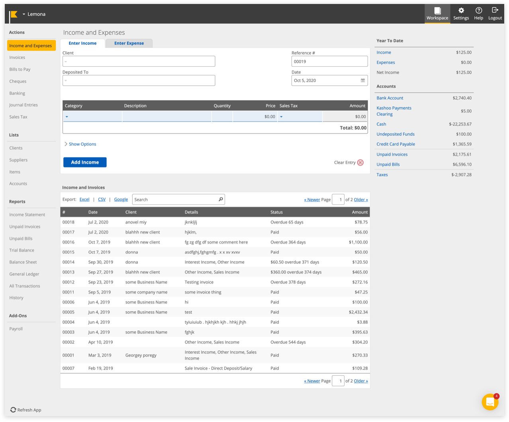
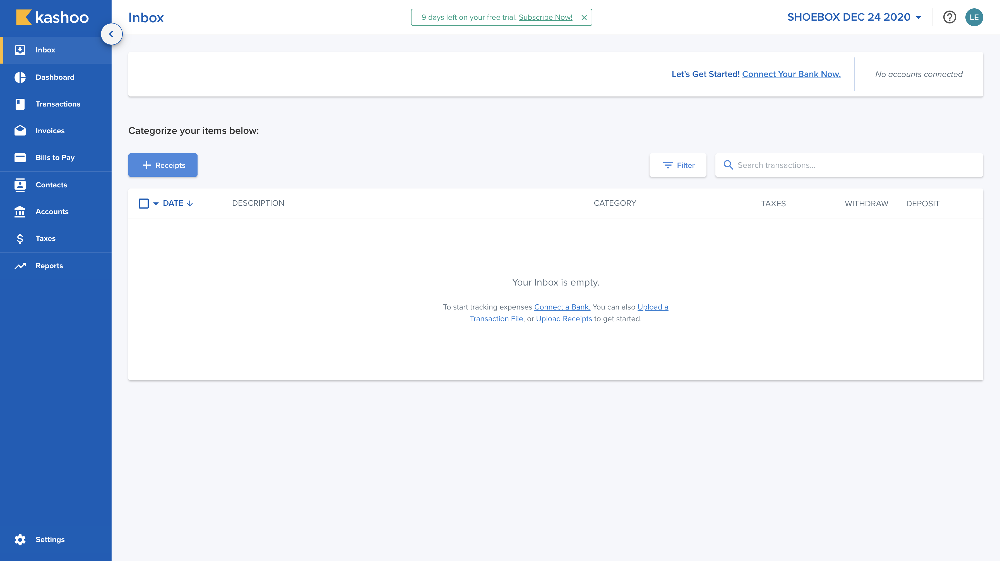

Kashoo 2.0 is an accounting application that automates bookkeeping tasks for small business owners, using machine learning to categorize transactions and matching receipts to bank transactions.
How can we make bookkeeping feel manageable for small business owners who aren’t accountants?
Freelancers, contractors, and sole proprietors need to keep their books, but most bookkeeping software is built for accountants. Kashoo Classic had the core features, but its interface had stopped keeping up with the people it was built for.
The average small business owner spends an estimated 6.8 hours a week on finances. Many of them use tools that were built for larger businesses, which leaves them with features they don’t need and workflows that slow them down.
Research
Before I joined, the team was already collecting feedback from existing users through Intercom conversations, surveys, and cancellation forms. I used that feedback to understand where Kashoo Classic was failing.

Kashoo Classic
Four themes came out of it:
Reports and data access
Users said the reports were limited and that they couldn’t drill into specific charges.
Real-time visibility
Users wanted to see their numbers as they changed, not after the fact.
Visual clutter
The interface didn’t distinguish income from expenses, and it was hard to find key actions.
Slow everyday tasks
Routine actions like a quick payment took too many clicks.
“We switched to quickbooks. We needed much more in the way of reports and accessing information, this note applies to both of our accounts. The inability to see specific charges by account within a project when clicking on that charge was very frustrating.
The report options were silly, and lacked some basic reports needed for business. Quickbooks offers so much more. Sorry.”
“I wanted something that was easy to just track the transactions, categorize them, as well as potentially create Pro Forma statements for me based off my data. The main reason why I didn't like Kashoo was because data was not disclosed in REAL-TIME!!!”
“I recommend Kashoo to people all the time.... The only hesitation I sense from people I mention it to ask me why they should choose it over Quickbooks Online which is priced similarly and has the same or more features.”
“The site needs more color... expenses needs to be different from income. Some short cuts up top in the blue area, perhaps where you can choose your own short cuts for sections that you always go to. A quick pay button, where you can choose your favorite account.... Right now it takes 5 clicks to do so, if you want to quick pay a few things without going to the check printing section, you are stuck clicking away.”
4×One analytics finding shaped the whole project: users who connected their bank were 4× more likely to subscribe. That made bank connection a priority, and it also made the first-time experience critical.
Kashoo 2.0
Key Design Decisions
I was brought on to refresh the visual design. After analyzing the feedback, I realized that aesthetics alone wouldn’t fix the core usability problems, so I remapped the user journey from an experienced user’s perspective instead.
1.
Designing for users who haven’t connected a bank yet
What we heard
Many users won’t connect their bank until they trust the product.
What we changed
Kashoo works without a bank connection, and the Inbox guides users through both paths. Connecting a bank is recommended but never required.
Why
The Inbox is the first thing new users see, so it had to make sense whether or not they had connected anything.

2.
Making editable and locked data obvious
What we heard
Users expected inline editing but couldn’t tell which fields they could change.
What we changed
Manual inputs are blue and editable. Fields pulled from a connected bank are gray and locked.
Why
The color difference tells users what they control without needing a label.
3.
Redesigning the editor as a split view
What we heard
Editing a transaction and understanding its totals were happening in the same cramped space.
What we changed
The editor uses a split layout. Details are on the left and totals are on the right, inspired by ecommerce checkout.
Why
Users were already familiar with this pattern from shopping online, so the totals sat where they expected them.
4.
Differentiating invoices from transactions
What we heard
Users confused invoices with the Inbox editor when the two shared a layout.
What we changed
I first planned to reuse the Inbox modal for Invoices and Bills to Pay. After discussing it with the team and the PM, we gave those pages their own layout built around a table.
Why
Sharing a layout had caused confusion in Kashoo Classic, and a table fits the work of reviewing many invoices at once.
More
Accessible palette
A soft blue and purple palette, chosen for contrast so elements stay distinguishable without feeling jarring.
Bulk editing
Select multiple like items and edit them as a group instead of one at a time.
Dynamic date ranges
Ranges like “Current Fiscal Year” and “Last Fiscal Quarter”, since fiscal dates vary from business to business.
Impact
4×
more likely to subscribe after connecting a bank
22.8%
subscriber growth after launch
1,000+
new users on the platform
User feedback on Kashoo 2.0
“As mentioned, I do like the overall features and interface a lot, the program uses restrictions that effectively guide clients towards doing more accurate book keeping and keeps them on the right track away from making mistakes.”
“As far as I can tell on Kashoo2.0 there is no feature to import a chart of accounts, which is unfortunately a big issue in setting it up agriculture clients as the only option is to manually set up each individual account, and may even end up being a deal breaker for most of these types of clients.”
“I loved the Kashoo interface! Way better than Quickbooks. Customer service through CHAT is AWESOME!”
“This is really easy to use! I tried FreshBooks and it was less easy to use. Specifically, in Kashoo your application lets me quickly add/subtract accounts to match my schedule C categories. This is great app for the Schedule C.”
“We are a small Community Interest Company run totally by volunteers and for us most of the functionality that we need is there. The interface is friendly and fairly easy for someone with dyslexia to use.”
“I appreciate the effort to make a layer that is simple and accessible, but I was surprised that there was not more access to the underlying structure.
Useful for those who don't care about accounting. Impossible for those who do...”
Reflection
Looking back, if I were to update the designs again, I’d let users import past expenses, so they have a way in without connecting a bank or entering everything by hand. I’d add duplicate detection and automation rules: the system could flag duplicates, let users set rules for repetitive tasks, and suggest rules based on patterns it sees. I’d make AI that doesn’t get in the way, with smarter automation that works quietly instead of feeling intrusive. And I’d add an accountant handoff, a checklist or full document export that makes tax prep easier and removes a major friction point.